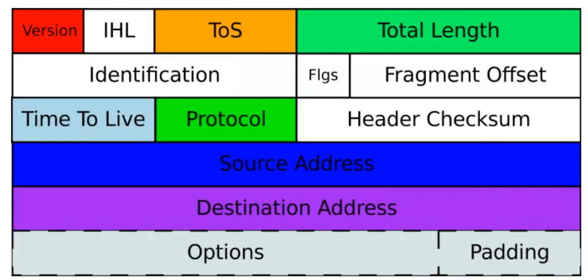
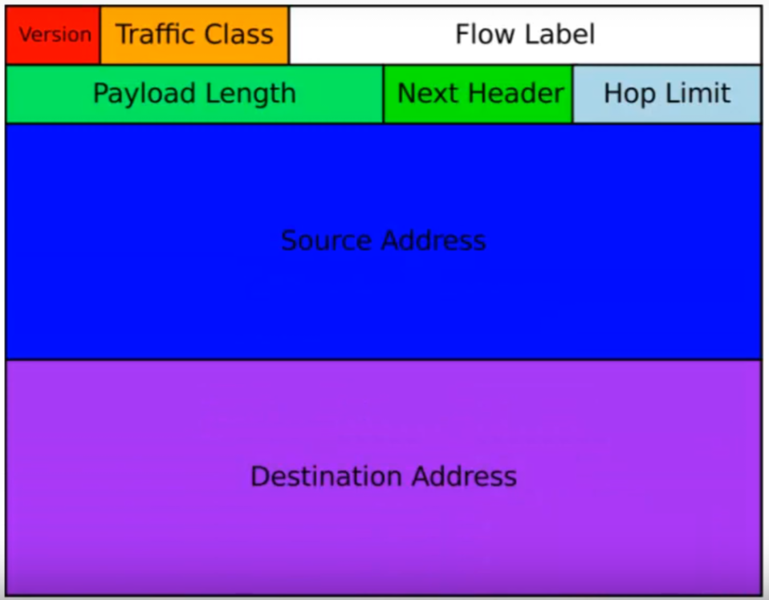

Introduction au protocole IP
Plan
• Rôle
• Versions
• Adresse IPv4
• Adresse IPv6
• En-tête IPv4
• En-tête IPv6
Rôle
• Couche internet (2) du modèle TCP/IP
• Couche réseau (3) du modèle OSI
◇ élaboration et transport des paquets
◇ représenation, routage et expédition
Versions
• deux version
◇ IPv4
▪ RFC 791 (septembre 1981)
▪ limité : seulement 2^32 (soit 4 294 967 296) d'adresses en théorie
- en pratique, seul un certains nombre en est utilisable
- limite en voie d'être attente sur internet
▪ encore le plus utilisé, aussi bien sur internet que les réseaux privés
◇ IPv6
▪ RFC 2460 (décembre 1998)
▪ 2^128 (soit environs 3.4e+38) adresses possibles
• Ces versions sont incompatibles
◇ un hôte ne disposant que d'une adresse ipv4 ne peu communiquer avec un hôte ne disposant que d'une adresse ipv6
◇ transition toujours en cours, car complexe
▪ cf RFC 4966
Adresse IPv4
• codée sur 32 bits
◇ soit 4 octets
▪ représentés sous forme décimale (base 10)
- nombre entre 0 et 255
▪ séparés par des points
▪ notation dite “décimale pointée”
• ex : 192.168.10.3
• Séparés en classes, en sous-réseaux, etc ..
◇ cf chapitre “adressage IP”
Adresse IPv6
• codée sur 128 bits
◇ soit 16 octets
▪ 8 groupes de 2 octets
- représentés en hexadécimale (base 16)
- soit 39 cractère en notation complète
▪ séparés par des signes doubles points
• ex : 2001:0db8:0000:85a3:0000:0000:ac1f:8001
• représentation abrégée :
◇ omission de 1 à 3 chiffres zéro non significatis
◇ et des groupes de valeur zéro
◇ ex : 2001:db8:0:85a3::ac1f:8001
En-tête IPv4

En-tête IPv6

Ce qu'on a couvert
• Rapide introduction au protocole IP
◇ rôle
◇ version (v4 et v6)
◇ formats d'adresses
◇ en-têtes
• Sera largement approfondie dans les deux chapitres suivants (adressage et routage)